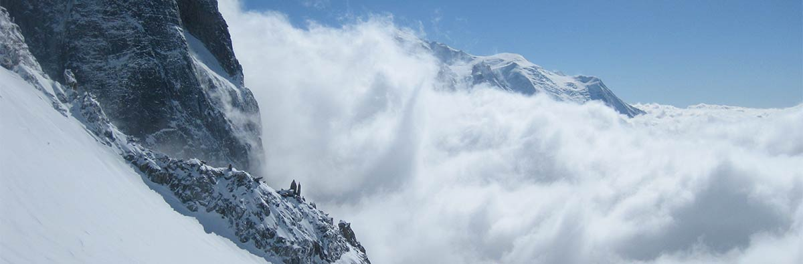

<div class="section" id="mainContainer">
  <div class="row">

  {% for course in site.teaching_current %}
  <div class="col-md-4" editable="true" id="LeftColumn">
    <div class="well" markdown="1">

      <h3><a href="{{ course.link }}">{{ course.name }}</a></h3>

      <p>
       <small>
        <a href="{{ course.syllabus }}">View Course Syllabus</a>

        {% if course.youtube %}
          | <a href="{{ course.youtube }}" target="_blank"><i class="fa fa-youtube-play" style="color:#cd201f;"></i> Watch Course Teaser</a>
        {% endif %}
      </small>
      </p>

      <p>{{ course.content | markdownify }}</p>

    </div>
  </div>
  {% endfor %}

  </div>

  
</div>
